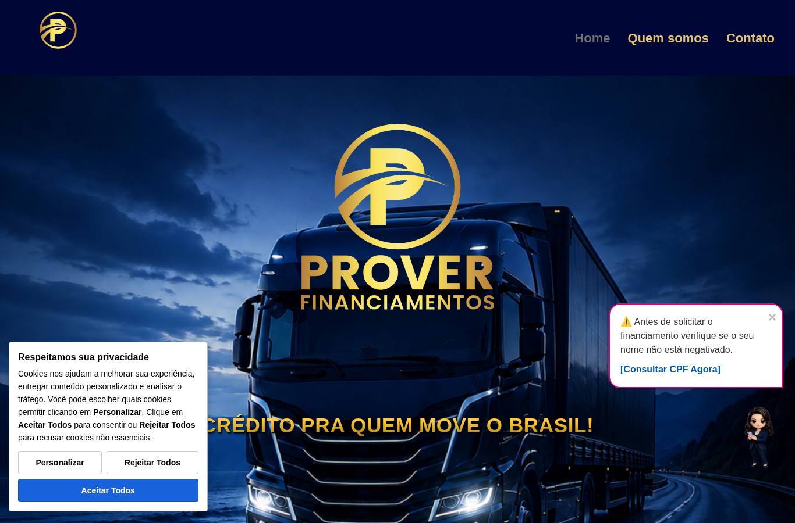
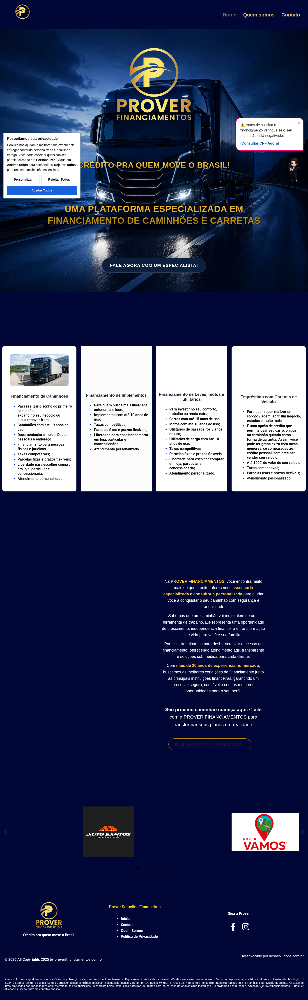

Sistema de Investigação de Marca e Identidade Online
https://proverfinanciamentos.com.br/
Prioridade: MEDIUM · Cenário: B_AMBIGUOUS_COMMUNICATION · Revisão humana: PENDING
Trata-se de estabelecimento intermediador de crédito (correspondente bancário de veículos/caminhões) com identidade visual própria dominante e presença do logotipo atual do Banco BV inserido legitimamente na seção de parceiros. Todavia, a transparência regulatória como COBAN é incompleta: o rodapé informa o CNPJ do Banco Votorantim contratante, mas omite a razão social e o CNPJ da própria Prover Financiamentos, cita norma revogada (Res. 3.954) e não informa canal de ouvidoria. Configura-se comunicação ambígua com necessidade de adequação às regras da Resolução CMN nº 4.935/2021. [Revisor: CONFIRM] A página pertence a uma promotora/correspondente bancário de financiamento de caminhões (Prover Financiamentos). Não há overbranding nem usurpação de oficialidade, constando a marca própria de forma dominante e o logotipo do Banco BV inserido na seção de parceiros. Contudo, há deficiências de transparência regulatória nos termos da Resolução CMN nº 4.935/2021 (omissão da razão social e CNPJ do próprio correspondente no rodapé, citação de norma revogada e ausência de canal de ouvidoria). A classificação REVIEW_REQUIRED com prioridade MEDIUM está correta e se sustenta integralmente.


| Ref | Tipo | Local | Conteúdo |
|---|---|---|---|
| E-URL | domain | url | URL final: https://proverfinanciamentos.com.br/ (domínio: proverfinanciamentos.com.br) |
| E-DISC-001 | text | search_index | Índice de busca (grounding): proverfinanciamentos.com.br — **URL:** `https://proverfinanciamentos.com.br` | **Como a marca é utilizada:** Especializada na captação e consultoria de financiamento de caminhões, cavalos mecânicos e empréstimo com garantia de veículo | Coloca-se como intermediadora declarando: *“Somos Correspondentes Bancários da seguinte instituição: Banco Votorantim S.A. (CNPJ 59.588.111/0001-03)”* | Cita a norma revogada (Resolução Bacen nº 3.954) em vez da vigente Resolução CMN nº 4.935/2021 | Informa o CNPJ do Banco Votorantim contratante, porém não dá transparência ao CNPJ e dados societários da própria Prover Financiamentos no rodapé de contratação | **Defasagem de fundamentação legal:** Diversos intermediadores que possuem CNPJ cadastrado e se declaram correspondentes de veículos/caminhões mantêm textos regulatórios apontando para a Resolução Bacen nº 3.954/2011 |
| E-SHOT-VIEWPORT | screenshot | viewport | evidence/Ce3bd84da3e/attempt-1/viewport.png (sha256 abe9272b8f1fd25f…) |
| E-SHOT-FULL | screenshot | page | evidence/Ce3bd84da3e/attempt-1/fullpage.png (sha256 c447183c47fc6030…) |
| E-TITLE | title | head | Financiamento de Caminhões Sem Comprovar Renda | Prover |
| E-META-1 | meta | head | description: Quer comprar seu caminhão mas não tem como comprovar renda? Na Prover Financiamentos ajudamos autônomos a conquistar o bruto. Simule agora! |
| E-META-2 | meta | head | og:site_name: Prover Finaciamentos |
| E-META-3 | meta | head | og:title: Financiamento de Caminhões Sem Comprovar Renda - Prover Financiamentos |
| E-META-4 | meta | head | og:description: Compre seu caminhão com facilidade! Especialistas em crédito para autônomos e motoristas, mesmo sem comprovação de renda. Simule agora! |
| E-CANONICAL | meta | head | https://proverfinanciamentos.com.br/ |
| E-HEAD-1 | heading | page | CRÉDITO PRA QUEM MOVE O BRASIL! |
| E-HEAD-2 | heading | page | UMA PLATAFORMA ESPECIALIZADA EM FINANCIAMENTO DE CAMINHÕES E CARRETAS |
| E-HEAD-3 | heading | page | CONHEÇA NOSSAS OPORTUNIDADES DE CRÉDITO |
| E-HEAD-4 | heading | page | ESPECIALISTA EM FINANCIAMENTOS |
| E-HEAD-5 | heading | page | CONHEÇA NOSSOS PARCEIROS |
| E-FOLD | text | viewport (acima da dobra) | Home Quem somos Contato Crédito pra quem move o Brasil! UMA PLATAFORMA ESPECIALIZADA EM FINANCIAMENTO DE CAMINHÕES E CARRETAS × ⚠️ Antes de solicitar o financiamento verifique se o seu nome não está negativado. [Consultar CPF Agora] Respeitamos sua privacidade Cookies nos ajudam a melhorar sua experiência, entregar conteúdo personalizado e analisar o tráfego. Você pode escolher quais cookies permitir clicando em Personalizar . Clique em Aceitar Todos para consentir ou Rejeitar Todos para recusar cookies não essenciais. Personalizar Rejeitar Todos Aceitar Todos |
| E-NAV | nav | header | Home <https://proverfinanciamentos.com.br/> | Quem somos <https://proverfinanciamentos.com.br/quem-somos/> | Contato <https://proverfinanciamentos.com.br/contato/> |
| E-CTA-1 | cta | page | Personalizar |
| E-CTA-2 | cta | page | Rejeitar Todos |
| E-CTA-3 | cta | page | Aceitar Todos |
| E-CONTACT-1 | contact | page | FALE AGORA COM UM ESPECIALISTA! <https://api.whatsapp.com/send/?phone=5511943144465&text=Ol%C3%A1%2C+vim+pelo+site+e+gostaria+de+ajuda%21&type=phone_number&app_absent=0> |
| E-CONTACT-2 | contact | page | FALE AGORA COM UM ESPECIALISTA! <https://api.whatsapp.com/send/?phone=5511943144465&text=Ol%C3%A1%2C+vim+pelo+site+e+gostaria+de+ajuda%21&type=phone_number&app_absent=0> |
| E-CONTACT-3 | contact | page | <https://www.facebook.com/share/1B9PnQNcE6/> |
| E-CONTACT-4 | contact | page | <https://www.instagram.com/proverfinanciamentos?igsh=N2t1dWpiaWY0ODh2> |
| E-IMG-1 | image | page (acima da dobra) | imagem alt='LOGO PROVER LOGO' src=https://proverfinanciamentos.com.br/wp-content/uploads/elementor/thumbs/cropped-40cfb68e958e554fa020744e53f47204-rohc84fzk5ybj3b5p4e4e1v32gabt7ww2wnlw5tre0.png (64x64, acima da dobra) |
| E-IMG-2 | image | page (acima da dobra) | imagem alt='' src=https://proverfinanciamentos.com.br/wp-content/uploads/2026/07/NOVO-logo-PROVER-FINANCIAMENTOS-SEM-TEL.png (332x320, acima da dobra) |
| E-IMG-3 | image | page | imagem alt='grupo-vamos-logo-vector' src=https://proverfinanciamentos.com.br/wp-content/uploads/2026/03/grupo-vamos-logo-vector.png (299x166, abaixo da dobra) |
| E-IMG-4 | image | page | imagem alt='librelato-logo' src=https://proverfinanciamentos.com.br/wp-content/uploads/2026/03/librelato-logo.png (299x131, abaixo da dobra) |
| E-IMG-5 | image | page | imagem alt='nostra logo' src=https://proverfinanciamentos.com.br/wp-content/uploads/2026/03/nostra.png (225x225, abaixo da dobra) |
| E-IMG-6 | image | page | imagem alt='omni-banco-financeira-logo' src=https://proverfinanciamentos.com.br/wp-content/uploads/2026/03/omni-banco-financeira-logo.png (299x167, abaixo da dobra) |
| E-IMG-7 | image | page | imagem alt='bv' src=https://proverfinanciamentos.com.br/wp-content/uploads/2026/03/bv.png (299x208, abaixo da dobra) |
| E-IMG-8 | image | page | imagem alt='grupo-vamos-logo-vector' src=https://proverfinanciamentos.com.br/wp-content/uploads/2026/03/grupo-vamos-logo-vector.png (299x166, abaixo da dobra) |
| E-IMG-9 | image | page | imagem alt='librelato-logo' src=https://proverfinanciamentos.com.br/wp-content/uploads/2026/03/librelato-logo.png (299x131, abaixo da dobra) |
| E-IMG-10 | image | page | imagem alt='nostra logo' src=https://proverfinanciamentos.com.br/wp-content/uploads/2026/03/nostra.png (225x225, abaixo da dobra) |
| E-IMG-11 | image | page | imagem alt='omni-banco-financeira-logo' src=https://proverfinanciamentos.com.br/wp-content/uploads/2026/03/omni-banco-financeira-logo.png (299x167, abaixo da dobra) |
| E-IMG-12 | image | page | imagem alt='bv' src=https://proverfinanciamentos.com.br/wp-content/uploads/2026/03/bv.png (299x208, abaixo da dobra) |
| E-IMG-13 | image | page | imagem alt='grupo-vamos-logo-vector' src=https://proverfinanciamentos.com.br/wp-content/uploads/2026/03/grupo-vamos-logo-vector.png (299x166, abaixo da dobra) |
| E-IMG-14 | image | page | imagem alt='' src=https://proverfinanciamentos.com.br/wp-content/uploads/2026/07/NOVO-logo-PROVER-FINANCIAMENTOS-SEM-TEL.png (116x112, abaixo da dobra) |
| E-TXT-001 | text | page | Documentação simples: Dados pessoais e endereço |
| E-TXT-002 | text | page | Atendimento personalizado. |
| E-TXT-003 | text | page | Atendimento personalizado. |
| E-TXT-004 | text | page | Atendimento personalizado. |
| E-TXT-005 | text | page | Atendimento personalizado. |
| E-TXT-006 | text | page | Por isso, trabalhamos para desburocratizar o acesso ao financiamento, oferecendo atendimento ágil, transparente e soluções sob medida para cada cliente. |
| E-TXT-007 | text | page | CONHEÇA NOSSOS PARCEIROS |
| E-TXT-008 | text | page | Nunca solicitamos qualquer taxa ou depósito para liberação de empréstimos ou financiamentos. Fique atento com fraudes e havendo dúvidas, entre em contato conosco. Como correspondente bancário seguimos as diretrizes da Resolução nº 3.954, do Banco Central do Brasil. Somos Correspondentes Bancários da seguinte instituição: Banco Votorantim S.A. (CNPJ 59.588.111/0001-03. Não somos instituição |
| E-TXT-009 | text | page | financeira. Crédito sujeito a análise e aprovação de crédito. As taxas de juros praticadas nas modalidades aqui oferecidas são estabelecidas unicamente pelas instituições parceiras, de acordo com os critérios de análise cada instituição. Só enviamos e-mail com a extensão “@proverfinanciamentos”. Qualquer atividade suspeita, entre em contato conosco. |
| Dimensão | Sinal | Achado | Refs |
|---|---|---|---|
| VISUAL_IDENTITY | LEGITIMATE | Identidade visual própria consolidada da Prover Financiamentos (paleta preta, dourada e azul com logo próprio em formato 'P'), sem apropriação indevida das cores e estilos do Banco BV. | E-SHOT-VIEWPORT E-SHOT-FULL E-IMG-1 E-IMG-2 |
| DECLARED_COMMERCIAL_IDENTITY | CONFUSION | Omissão de dados cadastrais societários próprios (CNPJ e razão social) da Prover Financiamentos no rodapé comercial. | E-TXT-008 E-DISC-001 |
| CORRESPONDENT_TRANSPARENCY | CONFUSION | Ausência do canal de ouvidoria da instituição contratante e citação de fundamentação normativa defasada (Res. Bacen 3.954/2011), descumprindo requisitos de transparência da Resolução CMN nº 4.935/2021. | E-TXT-008 E-DISC-001 |
| INSTITUTIONAL_LANGUAGE | LEGITIMATE | Deixa explícito que não é instituição financeira e que atua como intermediadora/correspondente. | E-TXT-008 E-TXT-009 |
| LOGO_USAGE | LEGITIMATE | O logotipo atual do Banco BV é exibido de forma secundária e proporcional dentro do carrossel/seção de parceiros comerciais e financeiros (junto a Grupo Vamos, Librelato, Nostra, Omni). | E-IMG-7 E-IMG-12 E-HEAD-5 E-TXT-007 |
| SERVICE_JOURNEY | LEGITIMATE | O fluxo de contratação visa a captação de clientes para financiamento de veículos pesados, direcionando para atendimento via WhatsApp da própria Prover. | E-CONTACT-1 E-CONTACT-2 |
| CONTACT_CHANNELS | LEGITIMATE | Canais de contato identificados pertencem à Prover Financiamentos (WhatsApp, redes sociais com handle próprio e menção de domínio de e-mail @proverfinanciamentos). | E-CONTACT-1 E-CONTACT-4 E-TXT-009 |
| CONSUMER_CONFUSION | NEUTRAL | Não há simulação de canal oficial do Banco BV, embora a falta do CNPJ próprio e da ouvidoria gere fragilidade regulatória na relação de correspondente. | E-TXT-008 E-SHOT-FULL |
Trata-se de estabelecimento intermediador de crédito (correspondente bancário de veículos/caminhões) com identidade visual própria dominante e presença do logotipo atual do Banco BV inserido legitimamente na seção de parceiros. Todavia, a transparência regulatória como COBAN é incompleta: o rodapé informa o CNPJ do Banco Votorantim contratante, mas omite a razão social e o CNPJ da própria Prover Financiamentos, cita norma revogada (Res. 3.954) e não informa canal de ouvidoria. Configura-se comunicação ambígua com necessidade de adequação às regras da Resolução CMN nº 4.935/2021.
Há declaração de correspondente ou de parceria, sem identificação suficiente ou sem confirmação cadastral.
| Tipo | Valor | Ref | Contexto |
|---|---|---|---|
| domain | proverfinanciamentos.com.br | E-URL | |
| cnpj | 59.588.111/0001-03 | E-DISC-001 | como intermediadora declarando: *“Somos Correspondentes Bancários da seguinte instituição: Banco Votorantim S.A. (CNPJ 59.588.111/0001-03 |
| institution_name_displayed | Banco Votorantim S.A | E-DISC-001 | |
| social_profile | https://www.facebook.com/share/1B9PnQNcE6/ | E-CONTACT-3 | |
| social_profile | https://www.instagram.com/proverfinanciamentos?igsh=N2t1dWpiaWY0ODh2 | E-CONTACT-4 | |
| trade_name | Prover Finaciamentos | E-META-2 | |
| FALE AGORA COM UM ESPECIALISTA! <https://api.whatsapp.com/send/?phone=5511943144465&text=Ol%C3%A1%2C+vim+pelo+site+e+gostaria+de+ajuda%21&type=phone_number&app_absent=0> | E-CONTACT-1 | ||
| correspondent_declaration | correspondente bancário | E-TXT-008 | Nunca solicitamos qualquer taxa ou depósito para liberação de empréstimos ou financiamentos. Fique atento com fraudes e havendo dúvidas, entre em contato conosco. Como correspondente bancário seguimos |
Mapeamento indicativo para apoio à auditoria. Não constitui conclusão regulatória; a decisão definitiva pertence à auditoria.
Fonte: NORMATIVE
Art. 14. O contrato de correspondente deve estabelecer: [...] II - vedação à utilização, pelo contratado, de logomarca ou de outros atributos que sejam similares aos adotados pela instituição contratante em suas agências, postos de atendimento, sítio eletrônico na internet, aplicativo ou outras plataformas de comunicação em rede;
Evidência observada: E-HEAD-5 E-IMG-1 E-IMG-12 E-IMG-2 E-IMG-7 E-SHOT-FULL E-SHOT-VIEWPORT E-TXT-007
Fonte: NORMATIVE
Art. 14. O contrato de correspondente deve estabelecer: [...] III - divulgação ao público, pelo contratado, de sua condição de prestador de serviços à instituição contratante, identificada pelo nome com que é conhecida no mercado, com descrição dos produtos e serviços oferecidos e canais de contato da instituição contratante, inclusive de sua ouvidoria, em local visível, em destaque e em formato legível, por meio de: a) sítio eletrônico do correspondente na internet, acessível na página inicial; b) aplicativo e outras plataformas de comunicação em rede do correspondente; [...]
Hipótese: Divulgação ao público da condição de prestador de serviços/parceria ausente, insuficiente, ambígua ou sem destaque. Aplicável somente se confirmado o vínculo de correspondente.
Evidência observada: E-DISC-001 E-SHOT-FULL E-TXT-008 E-TXT-009
Informação faltante:
Fonte: NORMATIVE
Art. 3º O correspondente atua por conta e sob as diretrizes da instituição contratante, que assume inteira responsabilidade pelo atendimento prestado aos clientes e usuários por meio do contratado.
Evidência observada: E-CONTACT-1 E-CONTACT-2 E-CONTACT-4 E-TXT-009
Limitações: requisitos contratuais/internos não fornecidos: mapeamento limitado ao texto normativo
Decisão: CONFIRM → REVIEW_REQUIRED / MEDIUM
A página pertence a uma promotora/correspondente bancário de financiamento de caminhões (Prover Financiamentos). Não há overbranding nem usurpação de oficialidade, constando a marca própria de forma dominante e o logotipo do Banco BV inserido na seção de parceiros. Contudo, há deficiências de transparência regulatória nos termos da Resolução CMN nº 4.935/2021 (omissão da razão social e CNPJ do próprio correspondente no rodapé, citação de norma revogada e ausência de canal de ouvidoria). A classificação REVIEW_REQUIRED com prioridade MEDIUM está correta e se sustenta integralmente.
| Tema | Severidade | Questionamento | Refs |
|---|---|---|---|
| contradictory_evidence | LOW | Coexistem declaração de correspondente e indícios de confusão. | E-TXT-008 |
| Fonte | Consulta / hipótese | URL original | Título / trecho |
|---|---|---|---|
| grounding | Objetivo: Correspondentes bancários e promotoras que declaram vínculo com a marca.
Execute no Google Search as seguintes consultas (dorks):
- ("correspondente bancário" OR "Correspondente no País" OR "correspondente do Banco BV") "Banco BV" -site:bv.com.br -site:bancobv.com.br -site:bvfinanceira.com.br -site:bvinvestimentos.com.br -site:napista.com.br -site:bvopen.com.br -site:meufinanciamentosolar.com.br -site:votorantim.com.br -site:vam.com.br -site:reclameaqui.com.br -site:jusbrasil.com.br -site:jus.br
- ("correspondente BV" OR "Somos correspondente" "Banco BV" OR "correspondente" "bv financeira") financiamento -site:bv.com.br -site:bancobv.com.br -site:bvfinanceira.com.br -site:bvinvestimentos.com.br -site:napista.com.br -site:bvopen.com.br -site:meufinanciamentosolar.com.br -site:votorantim.com.br -site:vam.com.br -site:reclameaqui.com.br -site:jusbrasil.com.br -site:jus.br
- "correspondente" "Banco Votorantim" financiamento -site:bv.com.br -site:bancobv.com.br -site:bvfinanceira.com.br -site:bvinvestimentos.com.br -site:napista.com.br -site:bvopen.com.br -site:meufinanciamentosolar.com.br -site:votorantim.com.br -site:vam.com.br -site:reclameaqui.com.br -site:jusbrasil.com.br -site:jus.br
Liste de forma abrangente as páginas públicas encontradas (até 12 resultados distintos), informando para cada uma o nome do estabelecimento/perfil, a URL e como a marca é utilizada (destaque visual, título, feirão, simulador, redes sociais e se há ou não identificação clara de CNPJ e condição de correspondente bancário). H3-service:correspondente-vinculo | https://proverfinanciamentos.com.br/ | proverfinanciamentos.com.br **URL:** `https://proverfinanciamentos.com.br` | **Como a marca é utilizada:** Especializada na captação e consultoria de financiamento de caminhões, cavalos mecânicos e empréstimo com garantia de veículo | Coloca-se como intermediadora declarando: *“Somos Correspondentes Bancários da seguinte instituição: Banco Votorantim S.A. (CNPJ 59.588.111/0001-03)”* | Cita a norma revogada (Resolução Bacen nº 3.954) em vez da vigente Resolução CMN nº 4.935/2021 | Informa o CNPJ do Banco Votorantim contratante, porém não dá transparência ao CNPJ e dados societários da própria Prover Financiamentos no rodapé de contratação | **Defasagem de fundamentação legal:** Diversos intermediadores que possuem CNPJ cadastrado e se declaram correspondentes de veículos/caminhões mantêm textos regulatórios apontando para a Resolução Bacen nº 3.954/2011 |
Original: https://proverfinanciamentos.com.br/
Final: https://proverfinanciamentos.com.br/
| Artefato | Caminho | SHA-256 | Bytes |
|---|---|---|---|
| screenshot_viewport | evidence/Ce3bd84da3e/attempt-1/viewport.png | abe9272b8f1fd25fb9b98934a7315ad52ffd0acdbe0f4cf5f04d771bd688a103 | 832025 |
| screenshot_full | evidence/Ce3bd84da3e/attempt-1/fullpage.png | c447183c47fc6030a295e78e9b7fe45e65beee28123051f2f243b03b51e06529 | 1812344 |
| html | evidence/Ce3bd84da3e/attempt-1/page.html.txt | 7d1155e482e554d55d33754e45be1b31095ac2f1ad3994fa2116fa59584b8329 | 186812 |
| text | evidence/Ce3bd84da3e/attempt-1/text.txt | 9622a8be0950bc8141101a1113f237af61daac1086ff60081a82b39ca41fd19e | 4284 |
| page_data | evidence/Ce3bd84da3e/attempt-1/page.json | 1b454760db13c8e7d393e0f6d4943bb3421474ec08bebd5ab2bc10039c889e03 | 16801 |
| Quando | De | Para | Nota |
|---|---|---|---|
| 2026-11-25T18:12:09+00:00 | DISCOVERED | QUEUED | prioritised (score 1.5) |
| 2026-11-25T19:18:55+00:00 | QUEUED | COLLECTING | |
| 2026-11-25T19:19:03+00:00 | COLLECTING | COLLECTED | |
| 2026-11-25T19:19:03+00:00 | COLLECTED | ANALYZING | |
| 2026-11-25T19:19:34+00:00 | ANALYZING | REVIEWING | |
| 2026-11-25T19:20:27+00:00 | REVIEWING | COMPLETED |